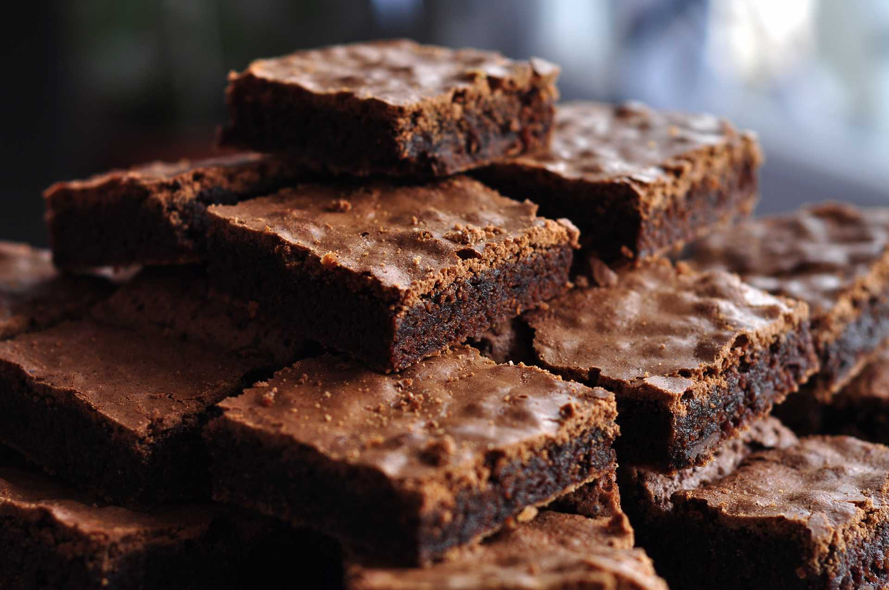

Brownies
Home

Descripcion
This brownies are specially delicious for dark chocolate lovers. Dense like a cake and with a lot of choclate. You can also add achocalte chips to make them even better.
Ingredients
- 0.5 cups of molten butter.
- 2/3 cups of dark sugar
- 1/3 of white sugar
- 3/4 of cup of 100% cacao without sugar
- 1/4 of tbsp of salt
- 1 tbsp of vanilla essence
- 2 eggs and 1 yolk
- 1/2 cups os of greek yogurt
- 1/3 cups o of flour
- 1/2 cups of chocolate chips
Pasos
- Precaliente el horno a 300°. Prepare el fondo y lados de una bandeja para hornear de 8x8 con papel pergamino. Haga esto cortando 2 piezas de igual tamaño y separándolas, dejando algo de sobra. Coloque a un lado.
- En un tazón grande, mezcle el azúcar, vainilla y cacao con una cuchara de madera o espátula de caucho. Añada los huevos y la yema uno por uno, removiendo vigorosamente luego de cada uno. La mezcla debe ser espesa y brillante. Añada el yogur y mezcle para combinar. Añada la harina y mezcle hasta que se absorbe por completo. Añada las chispas de chocolate, si las usa.
- Esparza la mezcla uniformemente sobre la bandeja preparada, la mezcla será muy densa. Hornee por 30-35 minutos o hasta que un palillo salga con pocos trozos de mezcla sobre él, pero no cruda. No cocine de más o sus brownies serán secos. No debe cocinarse por más de 35 minutos. Retire del horno y use el resto de papel inmediatamente para levantar el brownie de la bandeja y pasarlo a una tabla para cortar. Deje enfriar un poco, luego corte en 16 trozos cuadrados. ¡Disfrute!